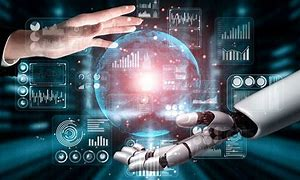

Artificial Intelligence (AI) has rapidly become an integral part of modern society, revolutionizing industries and shaping the way we live, work, and interact. This transformative technology, which involves creating systems that can perform tasks that normally require human intelligence, has opened up new possibilities across various domains. From healthcare to finance, transportation to entertainment, AI's influence is profound and far-reaching.

In healthcare, AI has proven to be a game-changer. Medical professionals now rely on AI algorithms to analyze complex medical data, diagnose diseases, and predict patient outcomes. AI-powered tools enhance medical imaging, enabling more accurate identification of anomalies and improving patient care. Additionally, AI-driven drug discovery accelerates the development of new treatments, offering hope for previously untreatable conditions.

The business world has also witnessed the impact of AI. Automation driven by AI algorithms streamlines workflows, leading to increased efficiency and reduced operational costs. Customer service has been transformed through chatbots and virtual assistants, providing instant responses and personalized interactions. AI's ability to process and analyze vast amounts of data fuels data-driven decision-making, giving companies a competitive edge.

AI's influence extends to transportation, with self-driving cars at the forefront of innovation. These vehicles utilize AI technologies like computer vision and machine learning to navigate complex roadways, potentially reducing accidents and revolutionizing transportation infrastructure. AI-driven traffic management systems optimize routes, minimizing congestion and enhancing overall urban mobility.
Despite its numerous benefits, AI also raises ethical and societal concerns. The potential for job displacement due to automation is a pressing issue. Striking a balance between technological advancement and safeguarding employment opportunities requires thoughtful consideration. Moreover, ensuring the responsible and unbiased use of AI, while protecting user privacy, remains a challenge.